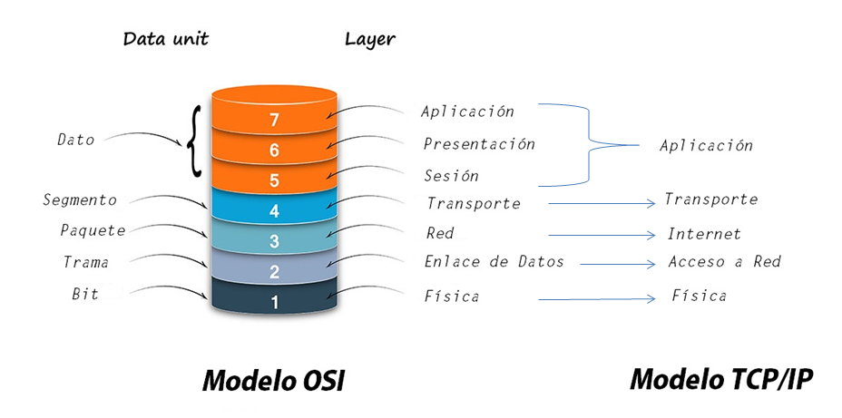

Modelo OSI
Tipos de Osi
Aplicacion
Presentacion
Sesion
Transporte
Red
Enlace de datos
Fisca
Tipos de Osi
Modelo TCP/IP
Tipos de TCP/IP
Aplicacion
Transporte
Internet
Acceso a la red
Tipos de TCP/IP
